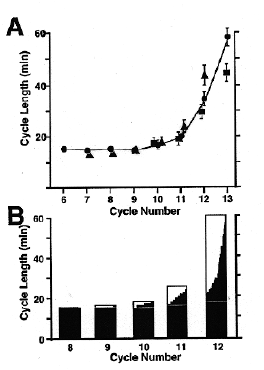

Modified from: Kimmel et al., 1955. Developmental Dynamics 203:253-310. Copyright © 1995 Wiley-Liss, Inc. Reprinted only by permission of Wiley-Liss, a subsidiary of John Wiley & Sons, Inc.
Fig. 9. Cell cycle lengthening and loss of synchrony at the midblastula transition, beginning at the tenth zygotic cell cycle (512-cell stage). The three different symbols in A represent data collected by following fields of cells in three different embryos. The distributions in B represent cycle lengths of individual cells followed in a field within a single embryo. From Kane and Kimmel (1993).

Figure 9